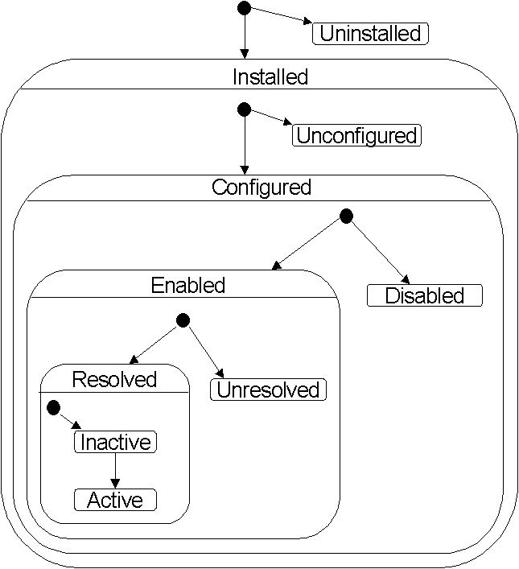

The following state diagram describes the various states a plugin can go through.
Although all those states can be attributed to a plugin, some of those states are more
related to a plugin into a given context, like for example the notion of enabled or disabled.

It is also clear that the events that triggers the state change can be partitionned into
three sets relatively to their nature and the kind of processing that can be done in response
to them. Indeed, it is really uncertain that all the plugin will care for the "installation" or "configuration"
events. Similarly the reaction to a "deactivation" event is unlikely to require the same
processing than a "disablement" event.
The resulting partitions are: